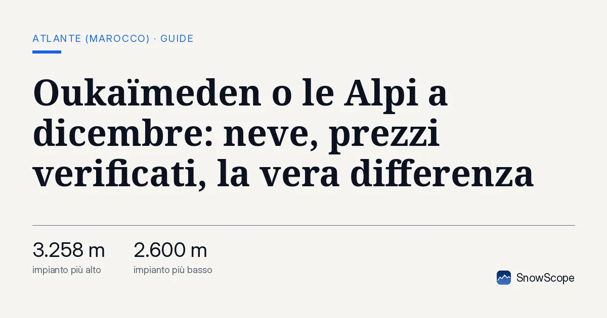
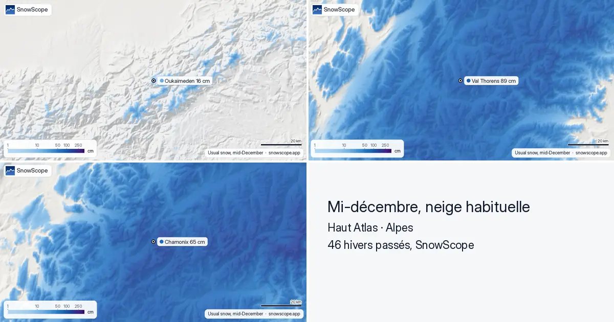

Oukaïmeden o le Alpi a dicembre: neve, prezzi verificati, la vera differenza
Un tipico 15 dicembre, Oukaïmeden si attesta a 16 cm di neve a mezza altitudine mentre Val Thorens raggiunge 89 cm e Chamonix 65 cm. Non abbiamo trovato tariffe ufficiali online per Oukaïmeden, quindi abbiamo confrontato quello che potevamo verificare: 46 anni di storia nivale e i prezzi effettivi degli impianti delle Alpi.
Le previsioni neve in tempo reale per Oukaïmeden nell'app SnowScopeAltezza neve, allerte powder e mappa 3D, gratis.
Spessore della neve in inizio dicembre su tre catene montuose
Il 15 dicembre in un inverno tipico, la situazione cambia drasticamente con l'altitudine e la posizione. I pendii medi di Oukaïmeden (2.929 m) mantengono solo 16 cm, e solo un inverno su nove raggiunge 50 cm. Il comprensorio medio di Val Thorens (2.498 m), più basso di Oukaïmeden, mostra 89 cm con metà di tutti gli inverni a 50 cm o più. I Grands Montets di Chamonix a mezza altitudine (2.001 m), ancora più basso, registra 65 cm nei dicembri tipici.
Le altitudini raccontano la storia. Alla vetta di Val Thorens (3.175 m) trovi 159 cm il 15 dicembre. Alla cima di Chamonix (2.768 m), 157 cm. Il picco di Oukaïmeden (3.258 m) raggiunge 17 cm. L'Atlante riceve meno umidità a dicembre; le Alpi affrontano tempeste atlantiche e beneficiano dei loro comprensori a mezza montagna più elevati. Per gli sciatori di dicembre, le Alpi offrono una copertura molto più affidabile.

Cosa significano davvero le probabilità di buone condizioni
Il 15 dicembre, quattro inverni su cinque a Val Thorens si attestano a 50 cm o più. A Chamonix, è tre su cinque. A Oukaïmeden, solo uno su nove. Questo conta se prenoti una settimana in anticipo: le Alpi garantiscono quasi neve sciabile a metà mese; l'Atlante no. La differenza si allarga verso Natale. Entro il 25 dicembre, il 93% degli inverni a Val Thorens supera 50 cm, contro solo il 13% a mezza montagna di Oukaïmeden.
Abbonamenti: cosa possiamo verificare
Val Thorens offre chiarezza. L'abbonamento giornaliero per adulti Les 3 Vallées costa 75,70 euro dal 5 al 18 dicembre 2026 (bassa stagione), poi 84,20 euro dal 19 dicembre. Mont-Blanc Unlimited di Chamonix varia da 75 a 104 euro al giorno tra il 28 novembre e il 18 dicembre, con il prezzo che aumenta ogni settimana.
Oukaïmeden non presenta tariffe ufficiali online a partire dal 13 novembre 2026. Abbonamenti e noleggi si sistemano in loco. Non pubblichiamo un prezzo piuttosto che indovinare. Per uno sciatore europeo, l'assenza di certezza sui prezzi aggiunge rischio alla prenotazione.
Dove stanno i veri risparmi
Se vivi a Marrakech, Oukaïmeden è a 50 km di distanza: nessun volo, nessuna settimana di noleggio, nessun hotel lontano da casa. Per un locale, questo è un vero vantaggio. Per un europeo, il volo verso il Marocco sostituisce il volo verso la Francia, e costa denaro simile. Il prezzo dell'abbonamento conta meno delle probabilità di neve: pagare 75 euro per 89 cm è migliore di non pagare niente per 16 cm e trovare rocce.
Quando Oukaïmeden ha senso
Dicembre è presto nel ciclo dell'Atlante. Febbraio e marzo sono i mesi di punta: a mezza montagna la media è 44 cm a febbraio e 53 cm a marzo, con metà degli inverni che raggiungono 50 cm o più. Un viaggio a dicembre funziona meglio come escursione veloce da Marrakech dopo neve fresca, non come vacanza prenotata mesi in anticipo. Al contrario, le Alpi mantengono gli sciatori di dicembre al sicuro con la loro profondità di mezza montagna affidabile e le loro vette più elevate.
Consigli per sciatori
- Alpi prima del 19 dicembre: prenota la tariffa bassa stagione Les 3 Vallées a Val Thorens per neve garantita a mezza montagna di 89 cm tipici.
- Chamonix: i prezzi aumentano durante dicembre; prenota presto per la tariffa di inizio stagione di 75 euro se puoi impegnarti su date prima del 18 dicembre.
- Oukaïmeden: trattalo come un'escursione veloce last-minute da Marrakech dopo una tempesta, non una prenotazione di una settimana. Chiedi i prezzi degli impianti all'arrivo.
- Per una settimana sci in dicembre in Europa, le Alpi offrono migliori probabilità dell'Atlante. Pianifica Oukaïmeden invece per febbraio o marzo.
- Controlla la mappa neve la settimana prima di viaggiare; le condizioni variano molto più nell'Atlante che nelle Alpi.
Su questi numeri
Le altezze neve delle località sono la neve più alta sui pendii superiori alla data indicata; sono stime per un'area, non una misura in un punto. Le previsioni possono cambiare. Leggi sempre il bollettino valanghe ufficiale prima del fuoripista.
Cita questo articolo
Per ricerca, didattica o stampa: numeri e grafici sono liberamente riutilizzabili con licenza CC BY 4.0 citando così.
SnowScope (2026), Oukaïmeden o le Alpi a dicembre: neve, prezzi verificati, la vera differenza, https://snowscope.app/blog/it/2026/11/oukaimeden-ou-alpes-week-end-ski-decembre-prix.html, consultato il 2026-11-14
SnowScope (Atlas Labs). (2026, November 14). Oukaïmeden o le Alpi a dicembre: neve, prezzi verificati, la vera differenza. SnowScope snow reports. https://snowscope.app/blog/it/2026/11/oukaimeden-ou-alpes-week-end-ski-decembre-prix.html
BibTeX
@misc{snowscope2026oukaimedenoualpesweekend,
author = {{SnowScope (Atlas Labs)}},
title = {Oukaïmeden o le Alpi a dicembre: neve, prezzi verificati, la vera differenza},
year = {2026},
month = nov,
howpublished = {\url{https://snowscope.app/blog/it/2026/11/oukaimeden-ou-alpes-week-end-ski-decembre-prix.html}},
note = {Published 2026-11-14 13:29 UTC; accessed 2026-11-14}
}· CC BY 4.0 · Metodi, dati e strumenti →
Oukaïmeden: neve e temperatura per quota, quest'inverno vs lo scorso (strumenti) →
Segui Oukaïmeden
Gratis: un messaggio quando arriva la neve e il meteo ogni mattina.